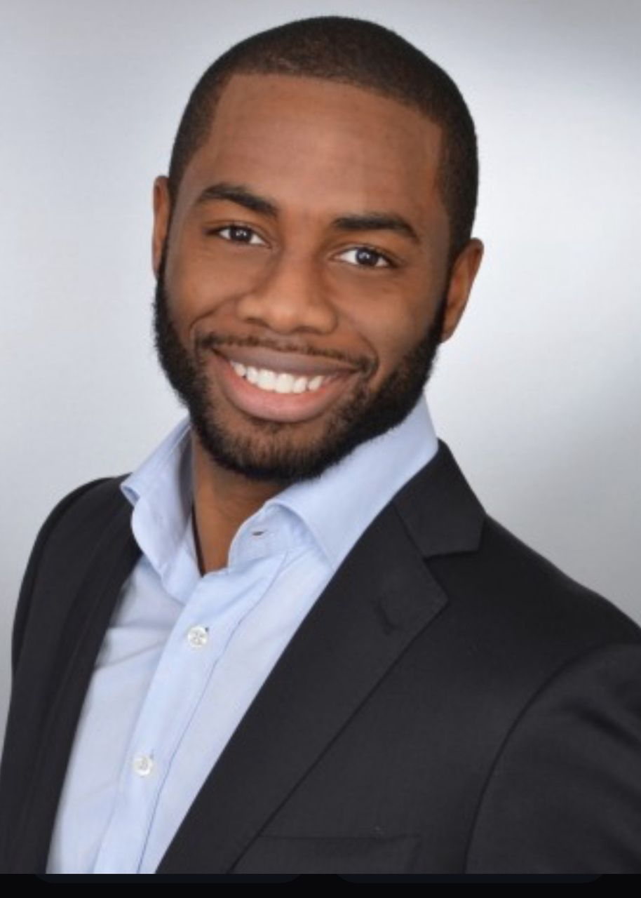
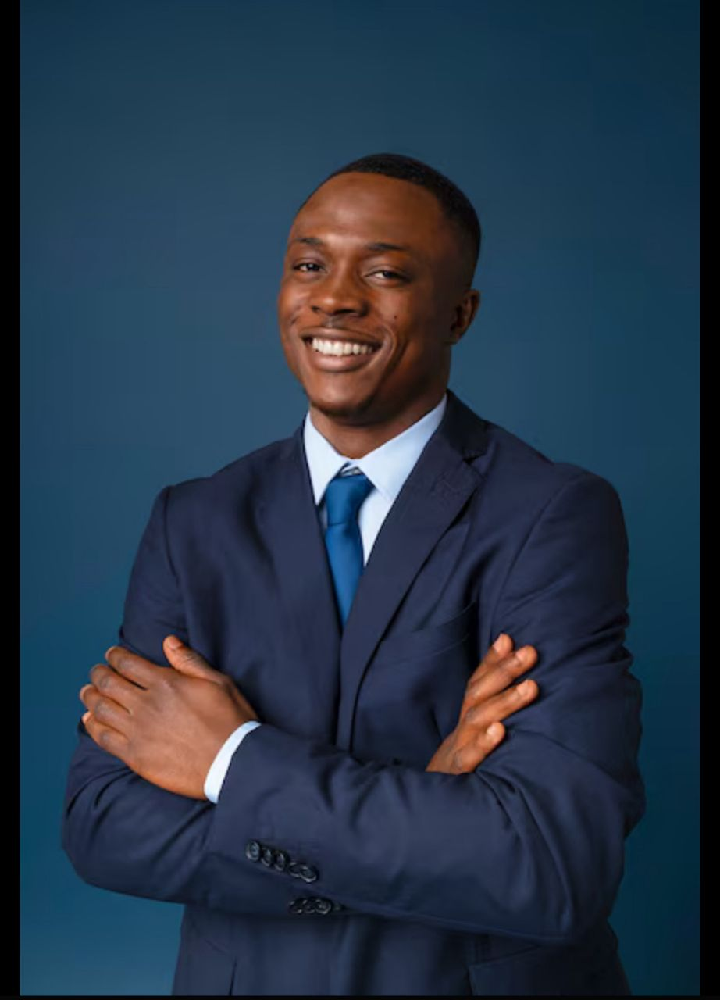
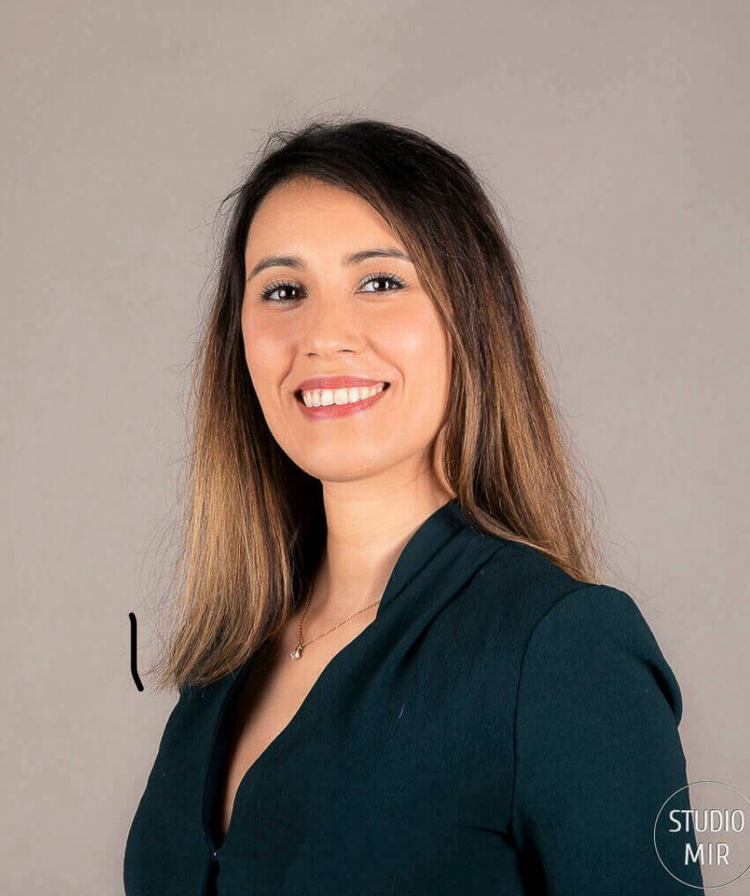
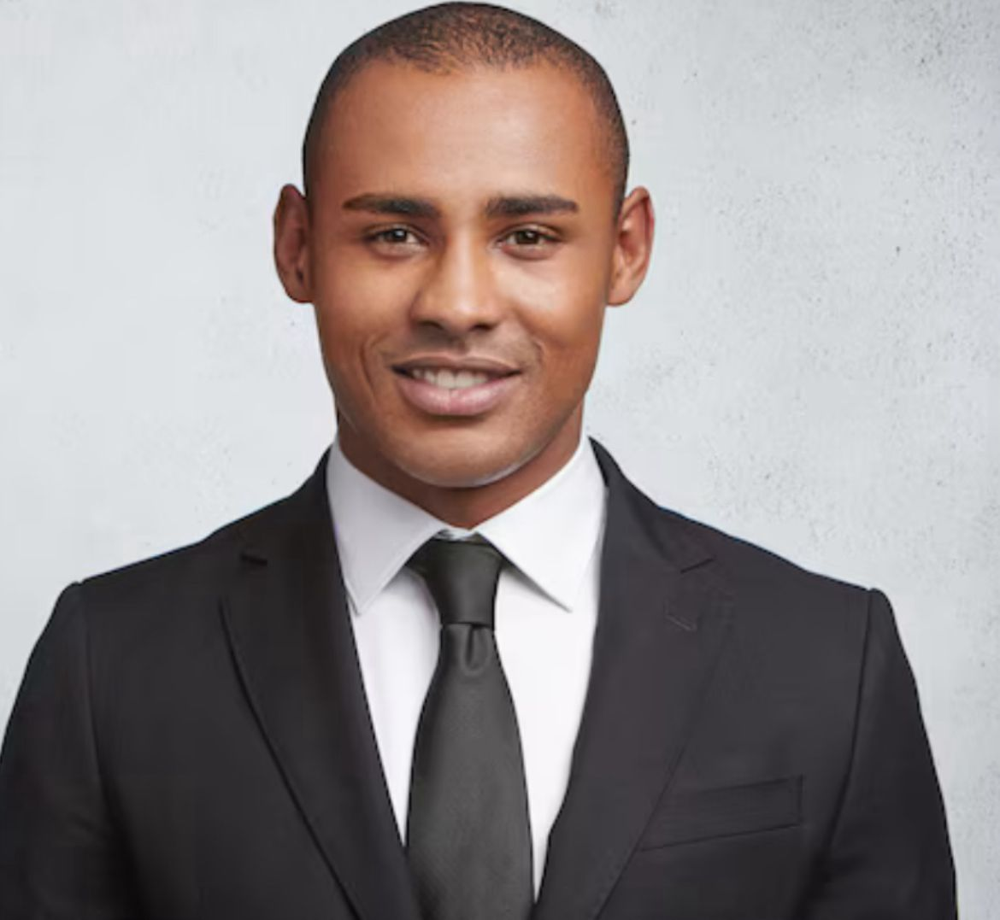

EQUIPE
🤝 Bienvenue dans notre équipe !
Chez les maestros du claviers, nous croyons que derrière chaque idée,
chaque projet et chaque réussite, il y a des personnes passionnées et engagées.
Dans cette section, découvre les visages qui font vivre notre communauté : des membres dynamiques,
aux talents variés, unis par la même envie de construire, d'innover et de partager.
Que tu sois curieux, futur membre ou partenaire potentiel, fais connaissance avec celles et ceux qui rendent tout cela possible.
Bienvenue dans l'aventure humaine derrière le projet !

FALLOU DIOUCK
PRESIDENT
-
Role:
Il dirige le club, organise les reunions,
supervise tous les activites et represente le club aupres
de l'administration et des partenaires
Competences requises:
Leadership,communication,vision strategiques
⭐⭐⭐⭐⭐

OUMAR MBEGUERE
VICE-PRESIDENT
-
• Rôle :
Il assiste le président et le remplace en cas d'absence.
Il peut aussi gérer certains projets spécifiques ou coordonner les autres membres.
• Compétences requises : Organisation, prise d'initiative.
⭐⭐⭐⭐⭐

ZEYNA SAKHO
RESPONSABLE TECHNIQUES
-
•Rôle :
Il gère l'aspect technique des projets du club
(sites web, plateformes, développement, support informatique).
•Compétences requises : Compétence en technologies, rigueur.
⭐⭐⭐⭐
YACINE NDIAYE
RESPONSABLE COMMUNICATION
- •Rôle :
Il s'occupe de la visibilité du club
(réseaux sociaux, affiches, emailings), prépare les communiqués et assure la liaison avec l'extérieur.
•Compétences requises : Rédaction, marketing, réativité
⭐⭐⭐⭐

HADYA DIAGANA
TRESORIER
-
•Rôle :
Il gère le budget du club, suit les dépenses et recettes,
tient les comptes et prépare les rapports financiers.
•Compétences requises : Gestion, sérieux, transparence.
⭐⭐⭐⭐
BINTOU NDOYE
SECRETAIRE GENERALE
-
•Rôle :
Il rédige les procès-verbaux des réunions,
prépare les ordres du jour, conserve les documents administratifs.
•Compétences requises : Organisation, rigueur, rédaction.
⭐⭐⭐